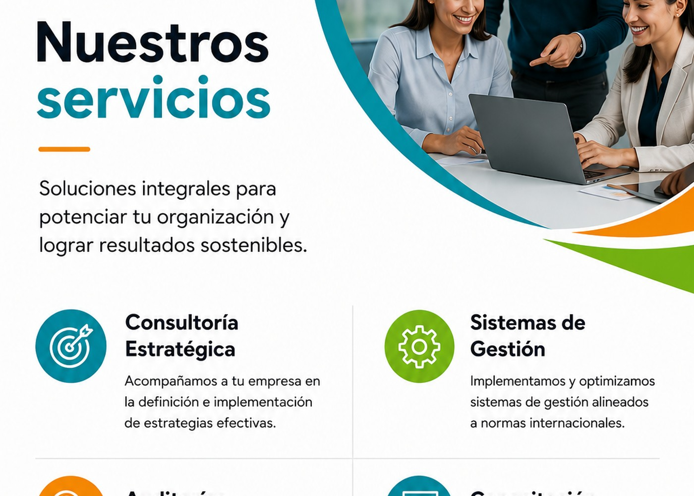

EO
Gestión de Estrategias Organizacionales
Rumbo, estructura y alineación de equipos con las metas del negocio.
Impulsamos la evolución de empresas mediante estrategia, sistemas de gestión, auditorías, mejora continua y formación especializada.

Trabajamos junto a nuestros aliados estratégicos para comprender su realidad, fortalecer la organización y convertir el conocimiento en acciones concretas.
Enfoque personalizado: soluciones adaptadas a cada contexto.
Visión integral: alineamos estrategia, personas y procesos.
Resultados sostenibles: acompañamos la implementación y la mejora.
Combinamos criterio estratégico, metodologías de gestión y acompañamiento cercano.
Rumbo, estructura y alineación de equipos con las metas del negocio.
Implementación e integración de normas ISO para fortalecer el desempeño.
Procesos, auditorías internas, brechas, certificación y hallazgos.
Mapeo, optimización, responsabilidades e indicadores operativos.
5S, Lean y herramientas para sostener mejores resultados.
Formación aplicable para líderes, equipos y profesionales.
Contexto, desafíos y prioridades.
Brechas, causas y oportunidades.
Soluciones y hoja de ruta.
Acción, formación y acompañamiento.
Medición y evolución continua.
Coordinemos una primera conversación para comprender tu desafío.